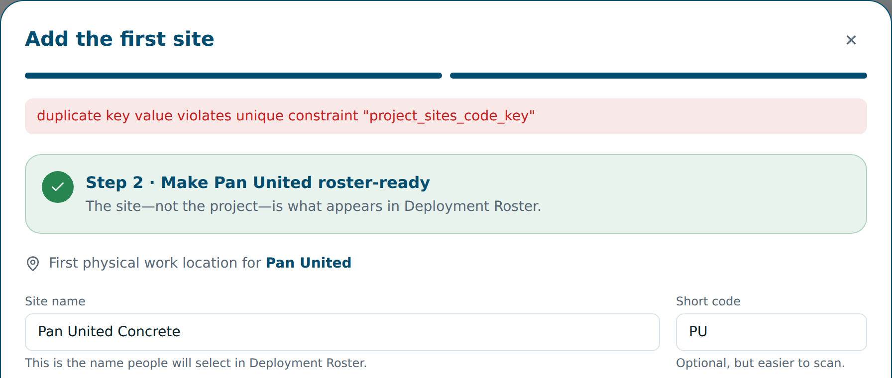
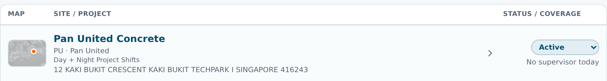
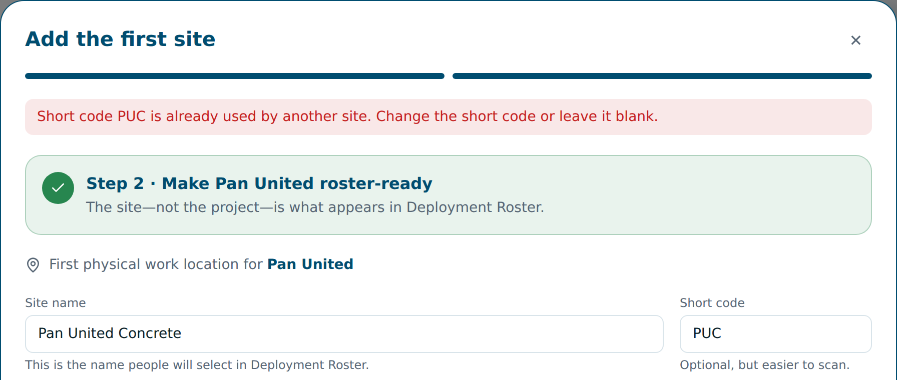
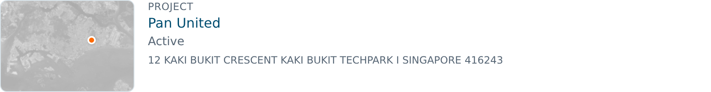
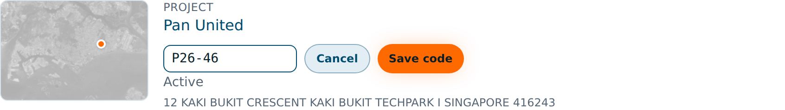
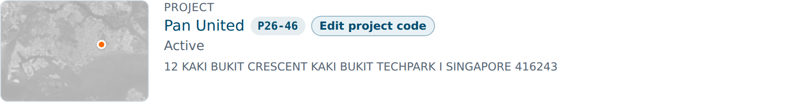
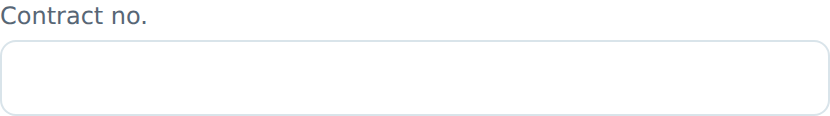
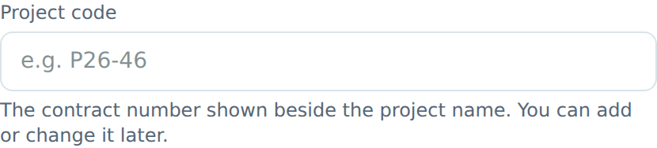

AB Dashboard update: projects, sites and project codes
For Lydia · 30 October 2026 · live now at ab.elitez.ai
✓ Pan United is ready. Project code P26-46 is saved and the site "Pan United Concrete" is active in Deployment Roster. We removed the extra Pan United left over from the first try, so there is only one.
What changed
- Archived sites no longer block their short code. If you archive a site by mistake, you can create a new site with the same short code.
- You can add or change a project code at any time from the site details, not only when creating the project.
- The field is now called "Project code" everywhere. It was called "Contract no." on the setup form.
- Clear error messages. If a short code really is in use by another active site, the message says so in plain English.
1. Creating a site with a short code from an archived site
This is what blocked you: the archived "Pan United" site still held the code PU.
Before

Saving failed with a technical database error, and it didn't say what to change.
Now

The same short code saves normally, because the old site is archived.
If the code belongs to another active site

Two active sites still can't share a short code, so roster stays unambiguous. You now get a plain message telling you what to do: choose another short code or leave it blank (it's optional).
2. Adding or fixing a project code later
Before, a project created without a code stayed without one.
Before

Even in Edit mode, there was no way to add the project code.
Now


Type the code and press Save code. It then shows beside the project name, with an Edit project code button.
How: Sites → click the site → Edit site → Add project code (or Edit project code) → type it → Save code.
3. The project code field when creating a project
Same field, clearer name, so it's harder to miss.
Before

Called "Contract no.", while the rest of the dashboard says "Project code".
Now

Called "Project code", with an example and a note that it can be changed later.